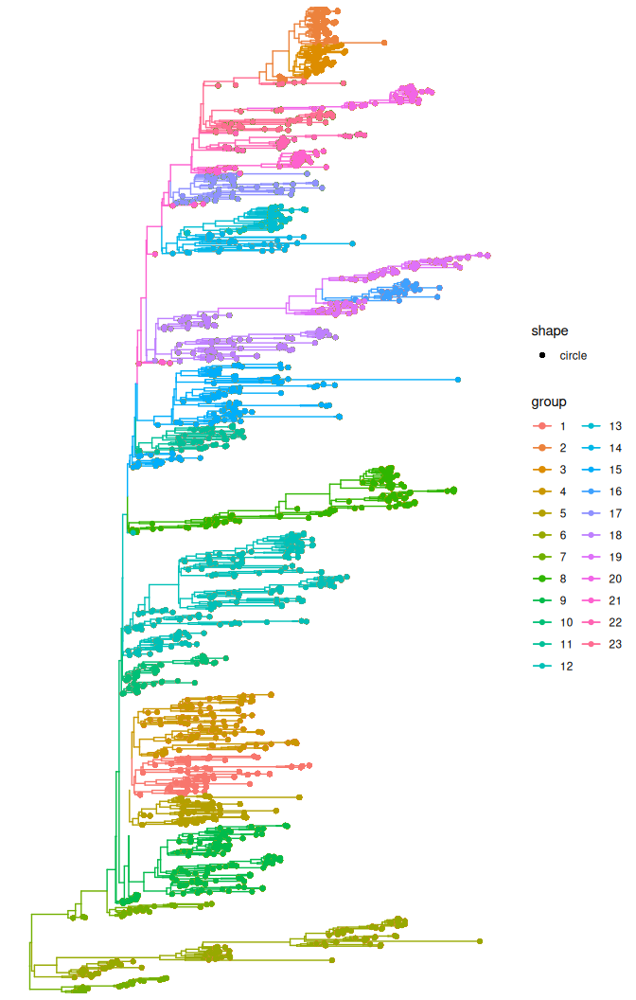
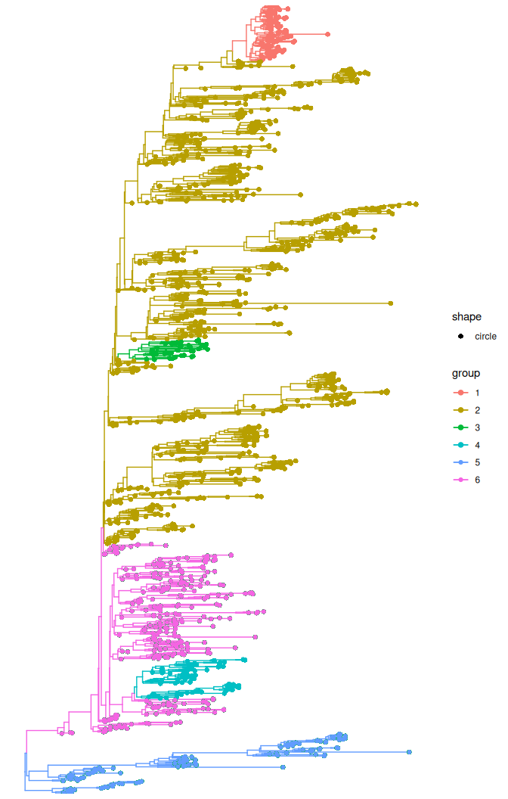

Node support values using treestructure
Vinicius Franceschi and Fabricia F. Nascimento
2025-09-26
Source:vignettes/supportValues.Rmd
supportValues.RmdIntroductions
This tutorial uses the public data available for Ebola here to demonstrate the use of node support values (e.g. bootstrap and posterior probability) to avoid designating population structure in badly supported clades.
We will use their time-scaled phylogenetic tree estimated with BEAST.
First, we need to load the R package we will use in this tutorial.
Now, we will load the time-scaled phylogenetic tree with posterior probability support values:
#get the dated tree by first downloading it from the URL below
tree_url <- "https://raw.githubusercontent.com/ebov/space-time/master/Data/Makona_1610_cds_ig.GLM.MCC.tree"
tmp_file <- tempfile(fileext = ".tree")
#Download BEAST tree to a tmp file
download.file(tree_url, tmp_file, mode = "wb")
#read the downloaded tree
beast_tree <- read.beast(tmp_file)Then we need to convert the tree to a phylo object and add the posterior
probability information from the Bayesian tree to the phylo object tree.
If we use the ape:read.nexus to read the tree that was estimated with BEAST,
we won’t get the posterior probability associated to the clades.
We now convert the dated tree to phylo object.
dated_tre <- as.phylo(beast_tree)Now we add the posterior probability from the BEAST tree to the dated_tree object.
# Get number of tips
n_tips <- length(dated_tre$tip.label)
# Get BEAST tree as tibble (it will include node numbers and posterior probabilities)
tree_data <- as_tibble(beast_tree)
#get posterior probability
posterior <- as.numeric(tree_data$posterior[(n_tips + 1):nrow(tree_data)])
#add the posterior probability information to the `phylo` object
dated_tre$node.label <- posteriorAssign clusters without using node support
Firstly, we will assign clusters without using node support values. Note that
the parameter nodeSupportValues is set to FALSE.
trestruct_res_nobt <- trestruct(dated_tre,
minCladeSize = 30,
nodeSupportValues = FALSE,
level = 0.01)Because treestructure will take several minutes to run, we can load the results:
trestruct_res_nobt <- readRDS( system.file('trestruct_res_nobt.rds',
package='treestructure') )
plot(trestruct_res_nobt, use_ggtree = T) + ggtree::geom_tippoint()
The treestructure analyses resulted in 23 clusters.
Assign clusters using branch support
Now, we will assign clusters using the information on branch support. As we are analyzing a dated tree estimated with BEAST, the branch support is the posterior probability.
We designate clusters that have at least 0.95 posterior probability. This is achieved by setting to 95 the parameter nodeSupportThreshold in the trestruct function.
Note that now the parameter nodeSupportValues is set to TRUE, which tells
the algorithm that the node support values is provided with the phylo object
as node.label.
You can also provide the nodeSupportValues as a vector with length equal to
the number of internal nodes in the tree.
trestruct_res <- trestruct(dated_tre,
minCladeSize = 30,
nodeSupportValues = TRUE,
nodeSupportThreshold = 95,
level = 0.01)Because it will take a minute or so to run treestructure, we can load the result
instead.
trestruct_res <- readRDS( system.file('trestruct_res.rds',
package='treestructure') )
plot(trestruct_res, use_ggtree = T) + ggtree::geom_tippoint()
Now we have only 6 well-supported clusters with differences in coalescent patterns.
Note that this might change if you use a higher or lower value for the nodeSupportThreshold in the trestruct function.
Using the CH-index
The CH-index will compare different values for the parameter levels in the
treestructure algorithm. We will need to specify level = NULL and
specify the lower and upper bound to optimize the parameter level.
Note that we will also take into consideration the use of branch support.
trestruct_chindex <- trestruct(dated_tre,
minCladeSize = 30,
nodeSupportValues = TRUE,
nodeSupportThreshold = 95,
level = NULL,
levellb = 0.0001,
levelub = 0.001)Because it will also take a minute or so to run treestructure, we can load the result instead.
trestruct_chindex <- readRDS( system.file('trestruct_chindex.rds',
package='treestructure') )
plot(trestruct_chindex, use_ggtree = T) + ggtree::geom_tippoint()Now we have only 2 well-supported clusters with differences in coalescent patterns after optimizing the significance level.
In this example, instead of using level = 0.01 (as in the default ), the optimization of level by using the CH-index identified level as 0.00073.
Final considerations
The function trestruct has a parameter named nsim that refers to the number
of simulations for computing the null distribution of the test statistics (Volz et al. 2020).
The nsim parameter in the trestruct function is is set to the default value of
10,000, which is a good value if the level parameter is set to 0.01 (which is the
default value).
If decreasing the value of the level parameter, the value of nsim should be
increased. In the above example using CH-index, the algorithm identified a
significance level of 0.00073. However, the analyses were carried out using the
default nsim of 10,000 simulations. We have future plans to automatically detect
the adequate number of simulations (nsim value) given the sizes of clades being
compared and the threshold p-value used in the test.
As treestructure is implemented in the moment, you should run a sensitive analyses
on your own dataset, if you use a significance level smaller than 0.01. For example,
if you use a significance level of 0.001 and a nsim > 10,000, then you can run your analysis twice and compare the results obtained in both runs, which should be very similar.
If results are very different, you should increase the value of nsim.